openshift 4.16 integration with Azure SSO without group sync operator
OpenShift support integration with Azure SSO through OpenID. In this article, we will show you how to integrate OpenShift 4.16 with Azure SSO.
azure portal setting
In your Azure portal, go to Azure Active Directory -> App registrations -> New registration
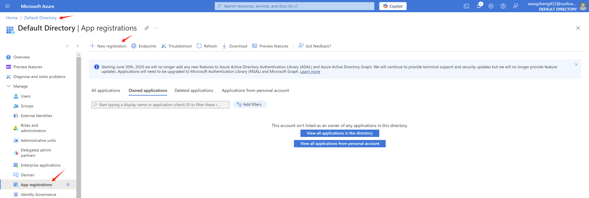
As you can see, we will create a
app registration azure-ocp-sso. Let us
find the redirect url for the openshift sso.
Get openshift sso callback host from openshift cli:
oc get route -n openshift-authentication
# NAME HOST/PORT PATH SERVICES PORT TERMINATION WILDCARD
# oauth-openshift oauth-openshift.apps.demo-01-rhsys.wzhlab.top oauth-openshift 6443 passthrough/Redirect NoneSo the redirect url is
https://oauth-openshift.apps.demo-01-rhsys.wzhlab.top/oauth2callback/azure-ocp-sso
. Now we can create the app registration in Azure
portal.
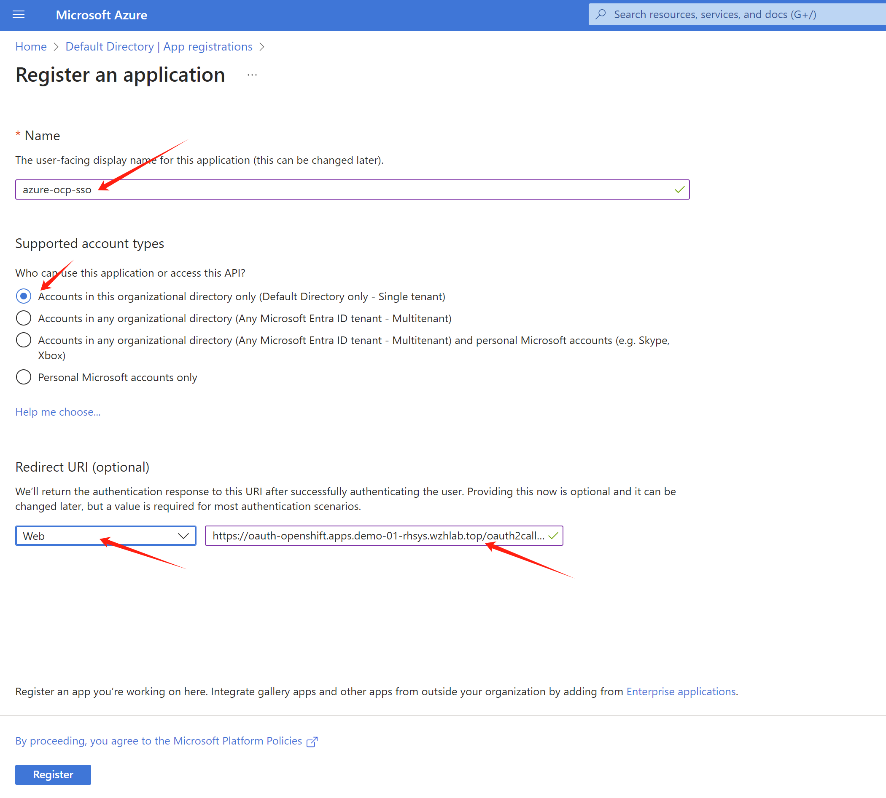
After the app registration is created, we can get the
tenant id and client id from the
Overview page. Write it down for later use.
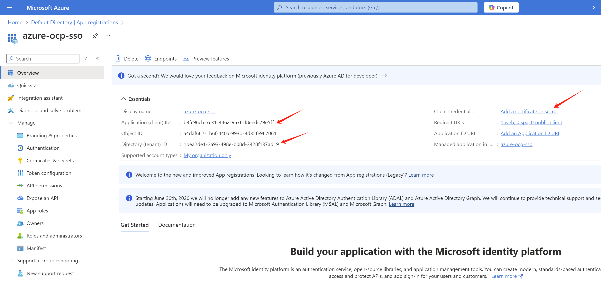
And create a client secret in the
Certificates & secrets page.
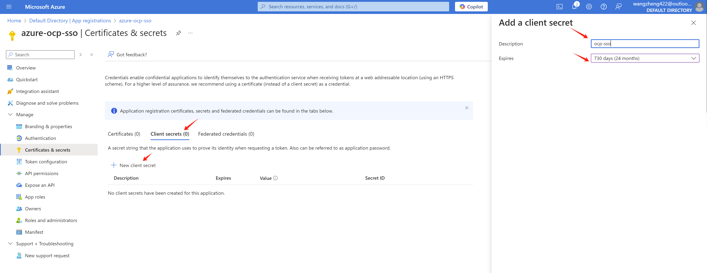
Write it down for later use.
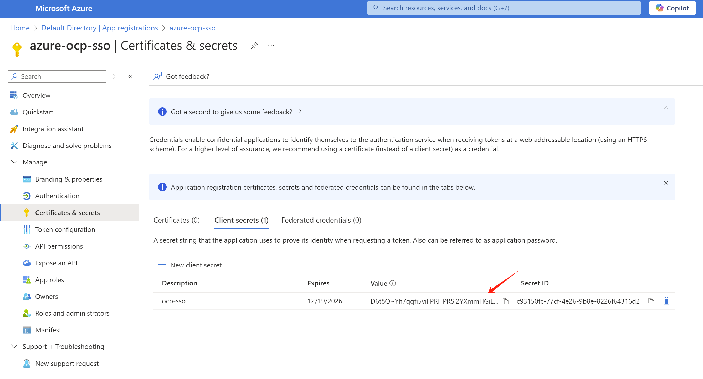
Now, we need go add some permissions to the app registration.
Go to API permissions page, click
Add a permission.
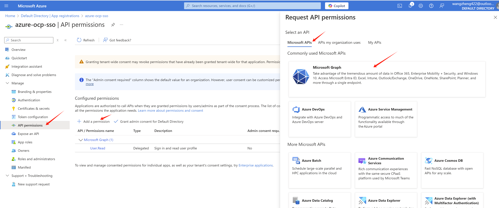
Add profile and email permissions
with Delegated permissions.
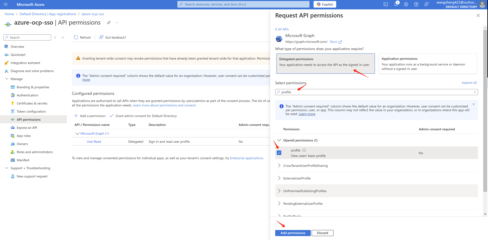
For group sync, we need to add
Directory.Read.All
GroupMember.Read.All User.Read.All
permission with Application permissions.
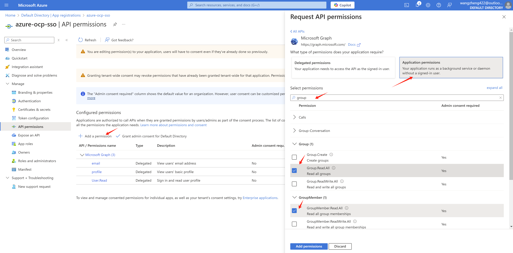
After the permissions are added, we need to grant admin consent for the permissions.
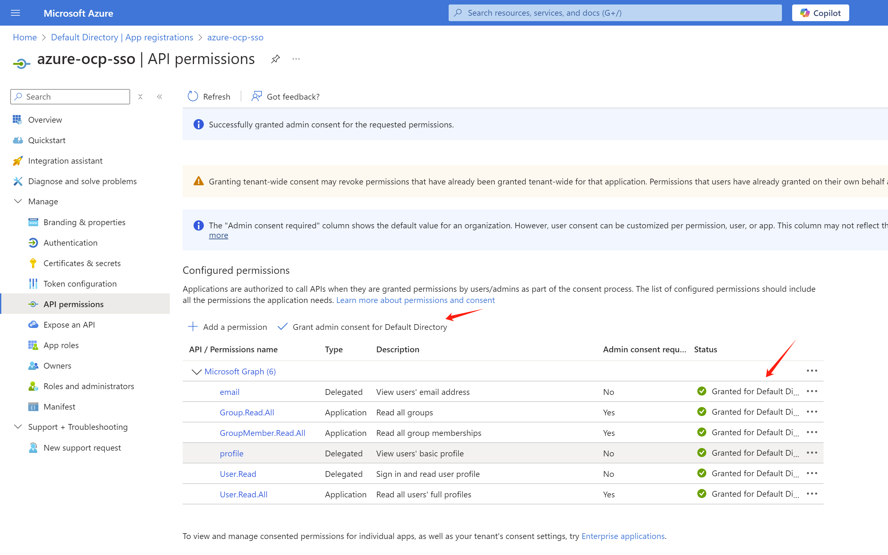
And get the endpoint of azure, write it down.
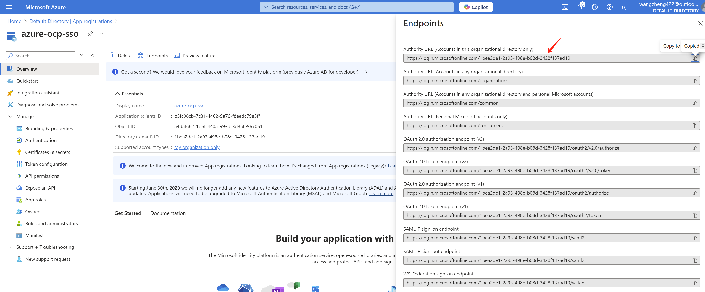
Add optional claim for email and
preferred_username.
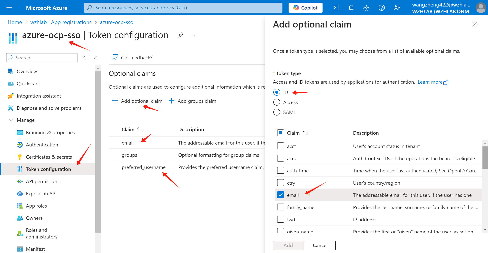
Add group claim. Official document also mentioned how to add group claim.
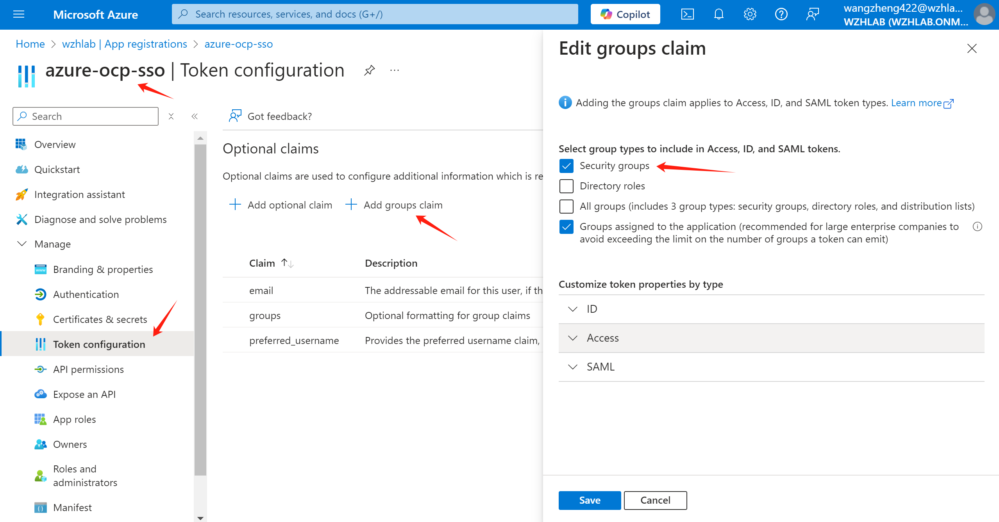
We also create some groups and add some users to the groups.
- L1Support(group)
- l1.u01(user)
- l1.u02(user)
- L2Support(group)
- l2.u01(user)
- l2.u02(user)
- L3Support(group)
- l3.u01(user)
- l3.u02(user)
- RetalixSupport(group)
- ret.u01(user)
- ret.u02(user)
- l1.u01(user)
- POSIMViewer(group)
- pos.v01(user)
- pos.v02(user)
- POSIMSupport(group)
- pos.s01(user)
- pos.s02(user)
- POSIMAdmin(group)
- pos.a01(user)
- pos.a02(user)
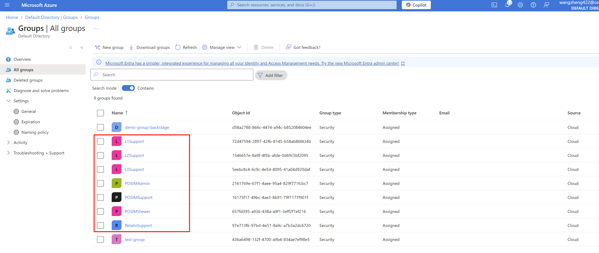
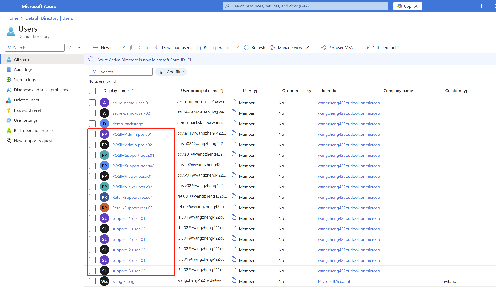
To sync the group information, we need to add groups to the
app registration in Azure portal.
Reference:
- https://learn.microsoft.com/en-us/entra/identity/enterprise-apps/assign-user-or-group-access-portal?pivots=portal
- https://cloud.redhat.com/experts/idp/entra-id-with-group-names/
Go to Enterprise applications
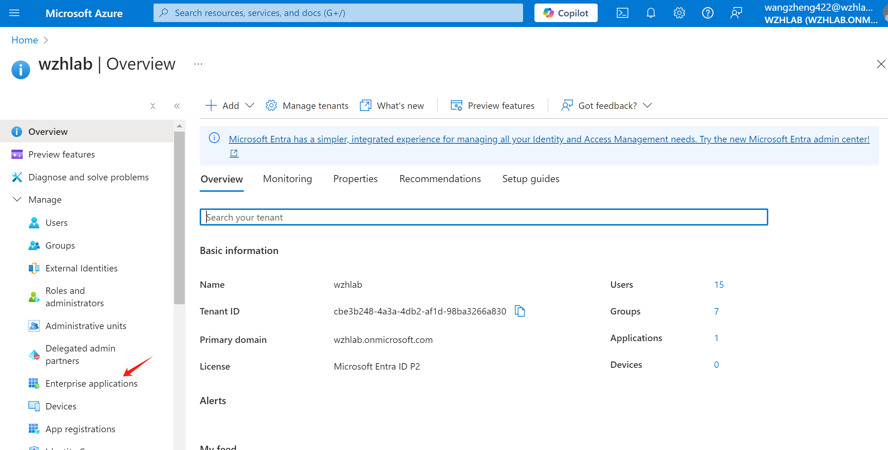
Select the app registration we created
before.
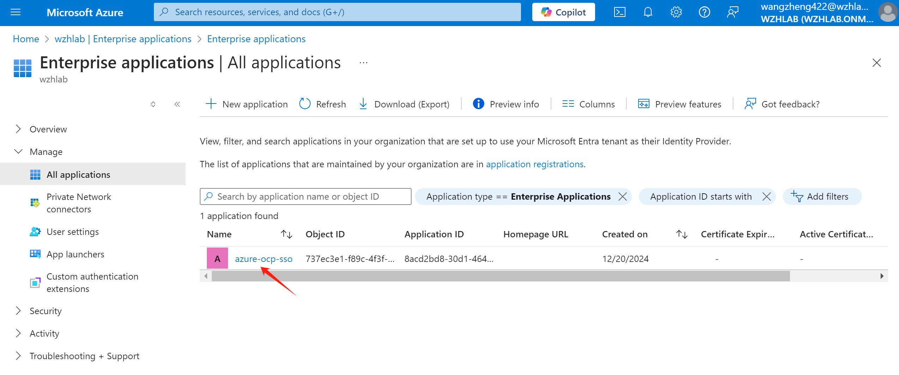
Select Users and groups ->
Add user/group
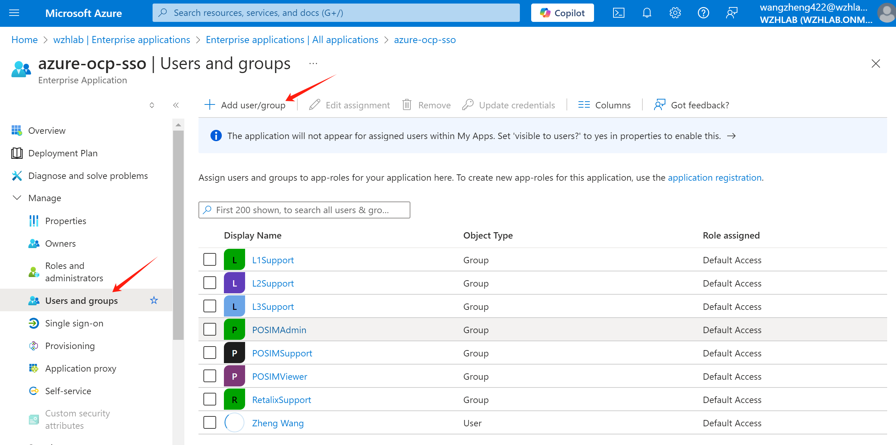
Select the groups you want to sync. Here you may need to
active azure entra subscription. A free trail is
available for 30 days and 25 users.
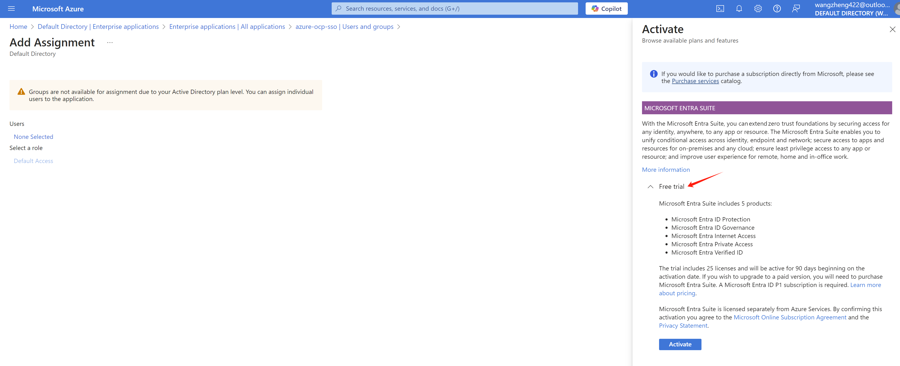
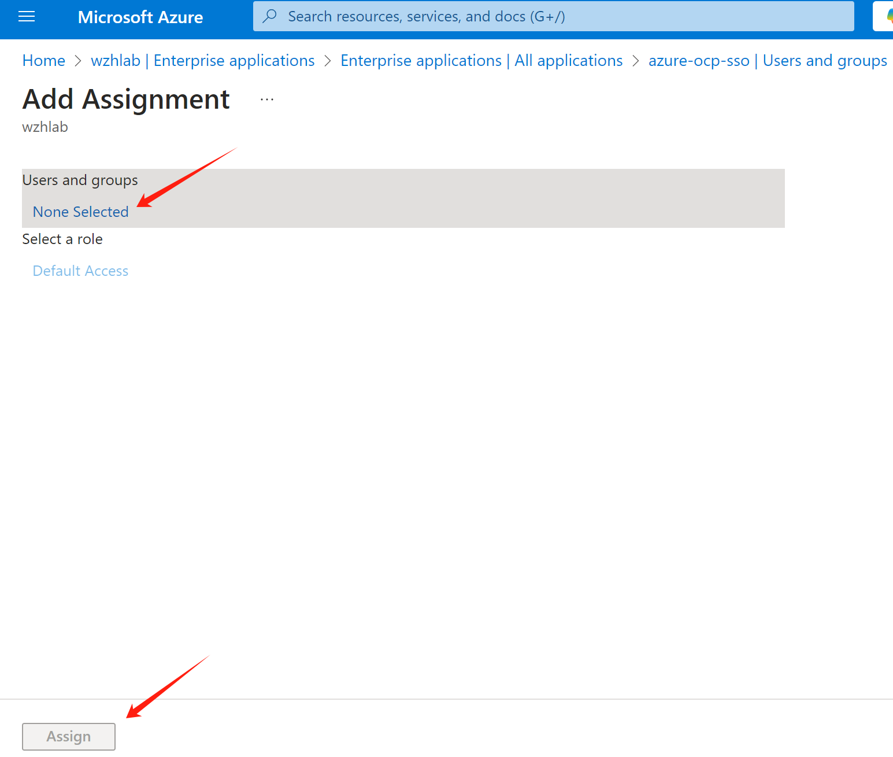
Then, go to app registration ->
manifest, backup existed manifest, and make some
changes.
[!NOTE] remember to backup the manifest before you make any changes.
Reference:
- https://github.com/MicrosoftDocs/entra-docs/blob/main/docs/identity/hybrid/connect/how-to-connect-fed-group-claims.md#configure-the-microsoft-entra-application-registration-for-group-attributes
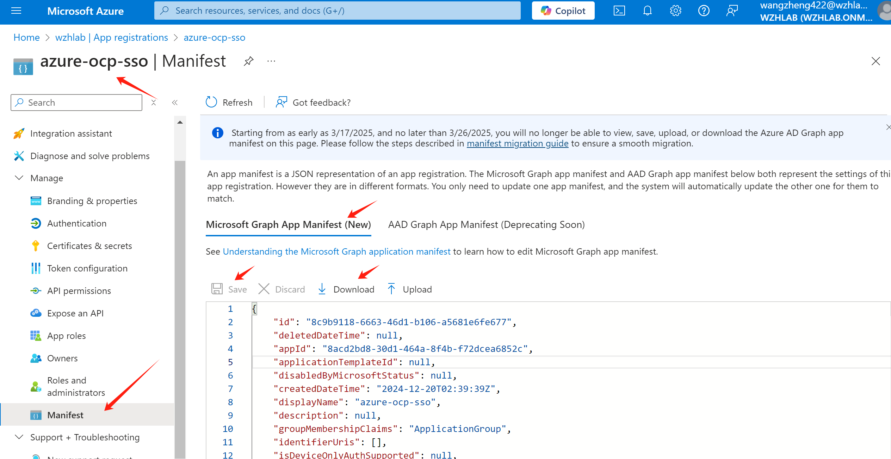
change value of “groupMembershipClaims” to “ApplicationGroup”, the result look like:
"groupMembershipClaims": "ApplicationGroup",change “optionalClaims” -> “idToken” -> “name”: “groups” -> “additionalProperties” to
"additionalProperties": [
"sam_account_name",
"cloud_displayname"
],The result look like:
"optionalClaims": {
......
"idToken": [
.......
{
"additionalProperties": [
"sam_account_name",
"cloud_displayname"
],
"essential": false,
"name": "groups",
"source": null
}
],Save the manifest changes. Now you finished the azure portal setting.
openshift sso setting
We will create a oauth object in openshift to
integrate with Azure SSO. Here is an example, we add 2 identity
providers, htpasswd and azure-ocp-sso.
The htpasswd is for local user, and
azure-ocp-sso is for Azure SSO. You can change it
based on your requirement, for example, remove
htpasswd if you don’t need it.
# set the environment variables
# here is the example, you need to change the value based on your own setting
export AZURE_TENANT_ID='xxxxxxxx-xxxx-xxxx-xxxx-xxxxxxxxxxxx'
export AZURE_CLIENT_ID='yyyyyyyy-yyyy-yyyy-yyyy-yyyyyyyyyyyy'
export AZURE_CLIENT_SECRET='XXXXXXXXXXXXXXXXXXXXXXXXXXXXXXXXXXXXXXXX'
export AZURE_ENDPOINT='https://login.microsoftonline.com/xxxxxxxx-xxxx-xxxx-xxxx-xxxxxxxxxxxx/v2.0'
# import the secret from the client secret var
oc create secret generic openid-client-secret-azure \
--from-literal=clientSecret=$AZURE_CLIENT_SECRET \
-n openshift-config
cat << EOF > ${BASE_DIR}/data/install/oauth.yaml
spec:
identityProviders:
- name: htpasswd
mappingMethod: claim
type: HTPasswd
htpasswd:
fileData:
name: htpass-secret
- mappingMethod: claim
name: azure-ocp-sso
openID:
claims:
email:
- email
groups:
- groups
name:
- name
preferredUsername:
- preferred_username
clientID: $AZURE_CLIENT_ID
clientSecret:
name: openid-client-secret-azure
extraScopes:
- email
- profile
issuer: $AZURE_ENDPOINT
type: OpenID
EOF
oc patch oauth/cluster --type merge --patch-file=${BASE_DIR}/data/install/oauth.yamlIf you make something wrong, and want to change the config,
you can edit the oauth object in openshift.
oc edit oauth/clusterIf you want to remove a user, remember to delete the user and identity in openshift.
oc delete user <username>
oc delete identity <user-identity>openshift role and rolebinding
Now, user can login, and group information is synced. We need to create role and rolebinding for the groups. So after user login, it has the correct permission.
Now, we create role for different groups. Below is an example for the roles. You can create your own roles based on your requirement.
# create namespace for demo
oc create ns retalix
oc create ns posim
# define the roles, change the rules based on your requirement
cat << EOF > ${BASE_DIR}/data/install/demo.role.yaml
---
apiVersion: rbac.authorization.k8s.io/v1
kind: ClusterRole
metadata:
name: l1-support-role
rules:
- apiGroups: [""]
resources: ["pods", "services", "events", "namespaces"]
verbs: ["get", "list", "watch"]
- apiGroups: ["apps"]
resources: ["deployments", "replicasets"]
verbs: ["get", "list", "watch"]
---
apiVersion: rbac.authorization.k8s.io/v1
kind: ClusterRole
metadata:
name: l2-support-role
rules:
- apiGroups: [""]
resources: ["pods", "services", "events", "namespaces", "configmaps", "endpoints"]
verbs: ["get", "list", "watch", "update"]
- apiGroups: ["apps"]
resources: ["deployments", "replicasets", "daemonsets", "statefulsets"]
verbs: ["get", "list", "watch", "update"]
- apiGroups: [""]
resources: ["pods/log", "pods/exec"]
verbs: ["get", "list", "create"]
---
apiVersion: rbac.authorization.k8s.io/v1
kind: ClusterRole
metadata:
name: l3-support-role
rules:
- apiGroups: ["*"]
resources: ["*"]
verbs: ["get", "list", "watch", "create", "update", "patch", "delete"]
- apiGroups: [""]
resources: ["pods/exec", "pods/log"]
verbs: ["create", "get", "list"]
- apiGroups: ["security.openshift.io"]
resources: ["securitycontextconstraints"]
verbs: ["get", "list", "watch"]
---
apiVersion: rbac.authorization.k8s.io/v1
kind: Role
metadata:
name: retalix-support-role
namespace: retalix
rules:
- apiGroups: [""]
resources: ["pods", "pods/log", "pods/exec", "services", "endpoints", "persistentvolumeclaims", "configmaps", "secrets", "events", "namespaces"]
verbs: ["get", "list", "watch", "create", "update", "patch"]
- apiGroups: ["apps"]
resources: ["deployments", "daemonsets", "replicasets", "statefulsets"]
verbs: ["get", "list", "watch", "create", "update", "patch"]
- apiGroups: ["batch"]
resources: ["jobs", "cronjobs"]
verbs: ["get", "list", "watch", "create", "update", "patch"]
- apiGroups: ["networking.k8s.io"]
resources: ["ingresses"]
verbs: ["get", "list", "watch"]
- apiGroups: ["route.openshift.io"]
resources: ["routes"]
verbs: ["get", "list", "watch"]
---
apiVersion: rbac.authorization.k8s.io/v1
kind: Role
metadata:
name: posim-viewer-role
namespace: posim
rules:
- apiGroups: ["*"]
resources: ["*"]
verbs: ["get", "list", "watch"]
---
apiVersion: rbac.authorization.k8s.io/v1
kind: Role
metadata:
name: posim-support-role
namespace: posim
rules:
- apiGroups: [""]
resources: ["pods", "pods/log", "pods/exec", "services", "endpoints", "configmaps", "events", "namespaces"]
verbs: ["get", "list", "watch", "create", "update", "patch"]
- apiGroups: ["apps"]
resources: ["deployments", "replicasets", "statefulsets"]
verbs: ["get", "list", "watch", "update", "patch"]
- apiGroups: ["batch"]
resources: ["jobs"]
verbs: ["get", "list", "watch", "create"]
---
apiVersion: rbac.authorization.k8s.io/v1
kind: Role
metadata:
name: posim-admin-role
namespace: posim
rules:
- apiGroups: ["*"]
resources: ["*"]
verbs: ["*"]
---
apiVersion: rbac.authorization.k8s.io/v1
kind: ClusterRoleBinding
metadata:
name: l1-support-binding
subjects:
- kind: Group
name: L1Support
apiGroup: rbac.authorization.k8s.io
roleRef:
kind: ClusterRole
name: l1-support-role
apiGroup: rbac.authorization.k8s.io
---
apiVersion: rbac.authorization.k8s.io/v1
kind: ClusterRoleBinding
metadata:
name: l2-support-binding
subjects:
- kind: Group
name: L2Support
apiGroup: rbac.authorization.k8s.io
roleRef:
kind: ClusterRole
name: l2-support-role
apiGroup: rbac.authorization.k8s.io
---
apiVersion: rbac.authorization.k8s.io/v1
kind: ClusterRoleBinding
metadata:
name: l3-support-binding
subjects:
- kind: Group
name: L3Support
apiGroup: rbac.authorization.k8s.io
roleRef:
kind: ClusterRole
name: l3-support-role
apiGroup: rbac.authorization.k8s.io
---
apiVersion: rbac.authorization.k8s.io/v1
kind: RoleBinding
metadata:
name: retalix-support-binding
namespace: retalix
subjects:
- kind: Group
name: RetalixSupport
apiGroup: rbac.authorization.k8s.io
roleRef:
kind: Role
name: retalix-support-role
apiGroup: rbac.authorization.k8s.io
---
apiVersion: rbac.authorization.k8s.io/v1
kind: RoleBinding
metadata:
name: posim-viewer-binding
namespace: posim
subjects:
- kind: Group
name: POSIMViewer
apiGroup: rbac.authorization.k8s.io
roleRef:
kind: Role
name: posim-viewer-role
apiGroup: rbac.authorization.k8s.io
---
apiVersion: rbac.authorization.k8s.io/v1
kind: RoleBinding
metadata:
name: posim-support-binding
namespace: posim
subjects:
- kind: Group
name: POSIMSupport
apiGroup: rbac.authorization.k8s.io
roleRef:
kind: Role
name: posim-support-role
apiGroup: rbac.authorization.k8s.io
---
apiVersion: rbac.authorization.k8s.io/v1
kind: RoleBinding
metadata:
name: posim-admin-binding
namespace: posim
subjects:
- kind: Group
name: POSIMAdmin
apiGroup: rbac.authorization.k8s.io
roleRef:
kind: Role
name: posim-admin-role
apiGroup: rbac.authorization.k8s.io
EOF
oc apply -f ${BASE_DIR}/data/install/demo.role.yaml
# oc delete -f ${BASE_DIR}/data/install/demo.role.yamltest with login
First, we try to login as l1.u01 user, which is
in L1Support group.
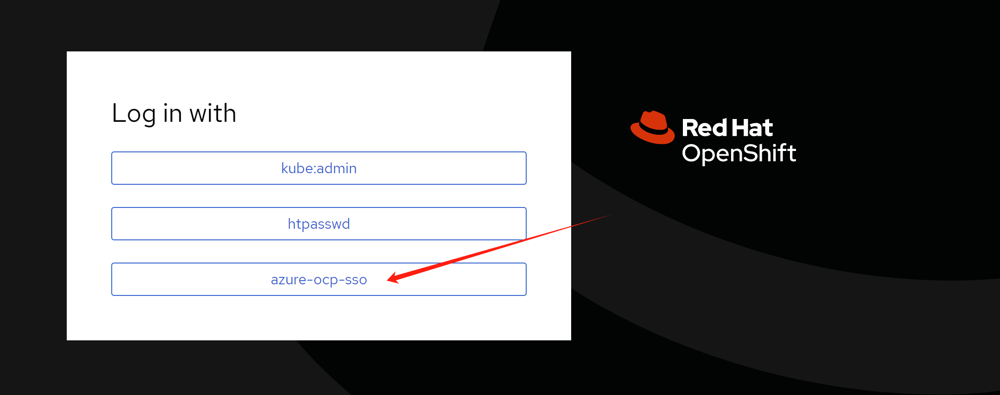
Login with l1.u01 user’s
user principal name and password. You can see the
web console.
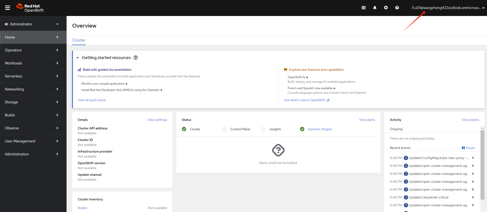
After user login, you can see the user in the
User page from an administrator account.
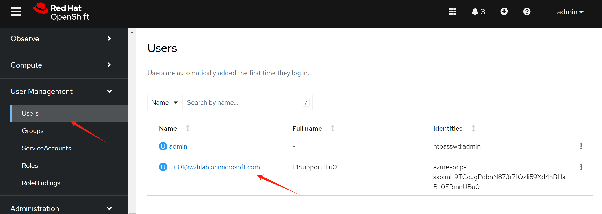
You can see 2 groups synced, which is l1.u01 belongs to.
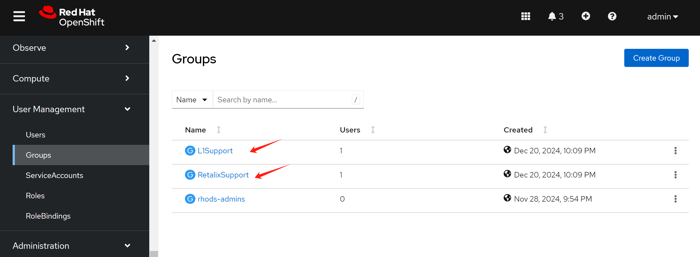
show me the code
In openshift oauth-server code, we can see openid related code
- https://github.com/openshift/oauth-server/blob/release-4.16/pkg/oauth/external/openid/openid.go
......
type Config struct {
ClientID string
ClientSecret string
Scopes []string
ExtraAuthorizeParameters map[string]string
AuthorizeURL string
TokenURL string
UserInfoURL string
IDClaims []string
PreferredUsernameClaims []string
EmailClaims []string
NameClaims []string
GroupClaims []string
IDTokenValidator TokenValidator
}
......